library(readr) # read and write tabular data
library(dplyr) # manipulate data
library(ggplot2) # create data visualizations
library(sf) # handle vector geospatial data
library(mapview) # create interactive maps
library(here) # file paths
library(lubridate) #Using to other datasets
Questions
- How do we get other datasets?
objectives
- Learn about pre-selected data sets provided in this workshop.
Load packages
There is a bug with sf https://github.com/r-spatial/sf/issues/1762. This bit of code is fix for the bug.
sf_use_s2(FALSE)Spherical geometry (s2) switched offOther datasets
There are various geospatial datasets that are free to use. Data sources used for this course include LA City Geohub, Data.gov, California State Parks, County of Los Angeles Open Data, and US Census TIGER.
We’ve pre-selected some geospatial data that workshop attendees might want to use to analyze iNaturalist data and provided a preview in the code below. These files are in the data/raw directory. We modified some of the downloaded data to make things easier for workshop attendees; see Editing geospatial files for more details. These files are in the data/cleaned directory.
When you use data from other sources, it’s a good idea to tell people where you got the data. Some data sets require people to cite the original source. Plus, it helps people who are looking at your analysis to know where you got the data.
LA City Neighborhood Councils boundaries
Some people might be interested in comparing iNaturalist data within different LA city neighborhoods.
LA City Neighborhood Councils boundaries https://geohub.lacity.org/datasets/lahub::neighborhood-council-boundaries-2018/about
nc_boundaries <- read_sf(here('data/raw/Neighborhood_Councils_(Certified)/Neighborhood_Councils_(Certified).shp'))Use View() to see all the records.
View(nc_boundaries)ggplot() +
geom_sf(data=nc_boundaries) +
theme_minimal()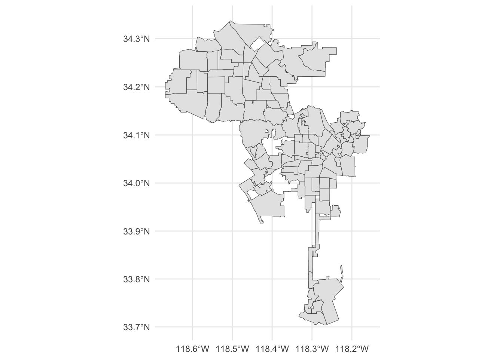
If we want the boundaries for one neighborhood, we can use filter(). Let’s get the boundaries for Arroyo Seco neighborhood council. We have to use capital letters because that’s the format of the original data.
arroyo_seco <- nc_boundaries |>
filter(NAME == 'ARROYO SECO NC')ggplot() +
geom_sf(data=arroyo_seco) +
theme_minimal()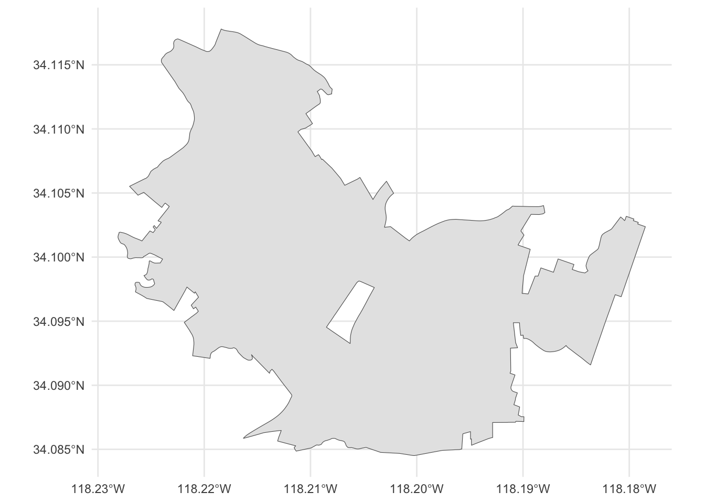
We can save the boundaries for Arroyo Seco NC using st_write(). First argument is the sf object, the second argument is the path. We can save the file as a Shapefile using .shp extension, or as GeoJSON file using .geojson extension.
st_write(arroyo_seco, here('data/cleaned/arroyo_seco_boundaries.geojson'))Los Angeles Times - LA neighborhoods
Some people might be interested in comparing iNaturalist data with different neighborhoods in LA county.
Los Angeles Times Data Desk developed a map that broke down L.A. County in 272 neighborhoods. https://maps.latimes.com/about/index.html
la_neighborhoods <- read_sf(here('data/raw/la_times_la_county_neighborhoods.json'))ggplot() +
geom_sf(data=la_neighborhoods) 
LA County incorporated and unincorporated boundaries
Some people might be interested in comparing iNaturalist data in the incorporated and unincorporated areas of Los Angeles County.
City and Unincorporated Community Boundary (LA County Planning) https://geohub.lacity.org/datasets/lacounty::city-and-unincorporated-community-boundary-la-county-planning/about This layer shows all incorporated and unincorporated areas of Los Angeles County
admin_boundaries <- read_sf(here('data/raw/admin_dist_SDE_DIST_DRP_CITY_COMM_BDY_-2349953032962506288/admin_dist_SDE_DIST_DRP_CITY_COMM_BDY.shp'))ggplot() +
geom_sf(data=admin_boundaries)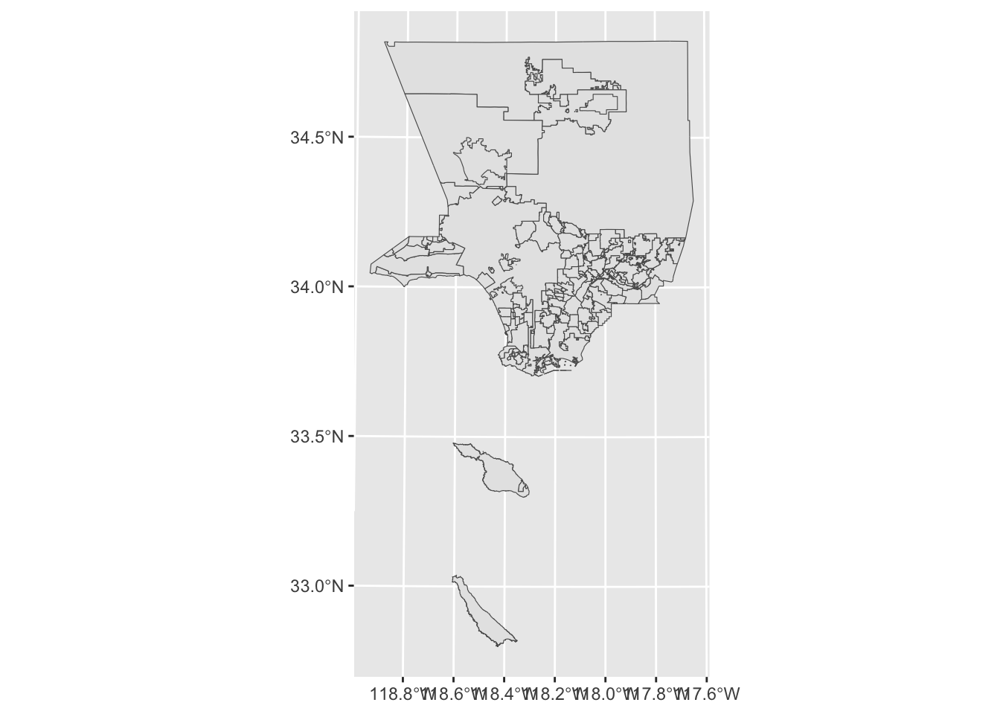
Parks in LA County
Some people might be interested in comparing iNaturalist data with the location of parks.
National Park Boundaries: https://catalog.data.gov/dataset/national-park-boundaries
California State Parks: https://www.parks.ca.gov/?page_id=29682
County of Los Angeles parks: https://geohub.lacity.org/datasets/lacounty::dpr-park-facilities-view-accessible-parks/explore
City of Los Angeles parks: https://geohub.lacity.org/datasets/lahub::los-angeles-recreation-and-parks-boundaries/about
Load all the parks data.
parks_national <- read_sf(here('data/cleaned/nps_la_county.geojson'))
parks_state <- read_sf(here('data/cleaned/state_parks_los_angeles_county/state_parks_los_angeles_county.shp'))
parks_county <- read_sf(here('data/raw/DPR_Park_Facilities_View_(Accessible_Parks)/DPR_Park_Facilities_View_(Accessible_Parks).shp'))
parks_city <- read_sf(here('data/raw/Los_Angeles_Recreation_and_Parks_Boundaries/Los_Angeles_Recreation_and_Parks_Boundaries.shp'))We want to convert the CRS of the parks data be the same
parks_county <- st_transform(parks_county, crs = st_crs(parks_national))parks_city <- st_transform(parks_city, crs = st_crs(parks_national))parks_state <- st_transform(parks_state, crs = st_crs(parks_national))Create map with parks and iNaturalist data. Use col.region to set the color of the parks.
mapview(parks_national, col.region='orange') +
mapview(parks_county, col.region='red') +
mapview(parks_city, col.region='yellow') +
mapview(parks_state, col.region='green') 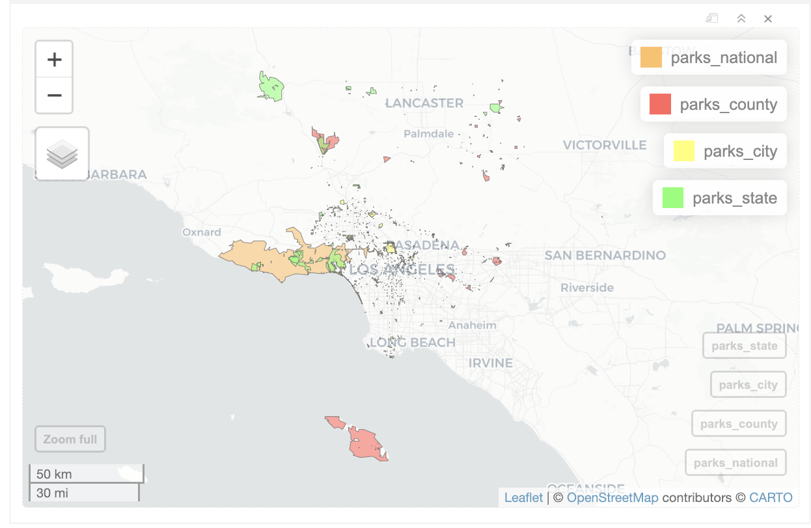
LA County water areas
Some people might be interested in comparing iNaturalist data with streams, rivers, lakes, ponds in LA County.
We got water areas using US Census TIGER/Line data.
water_areas <- read_sf(here('data/cleaned/la_county_waterareas.geojson'))ggplot() +
geom_sf(data=water_areas)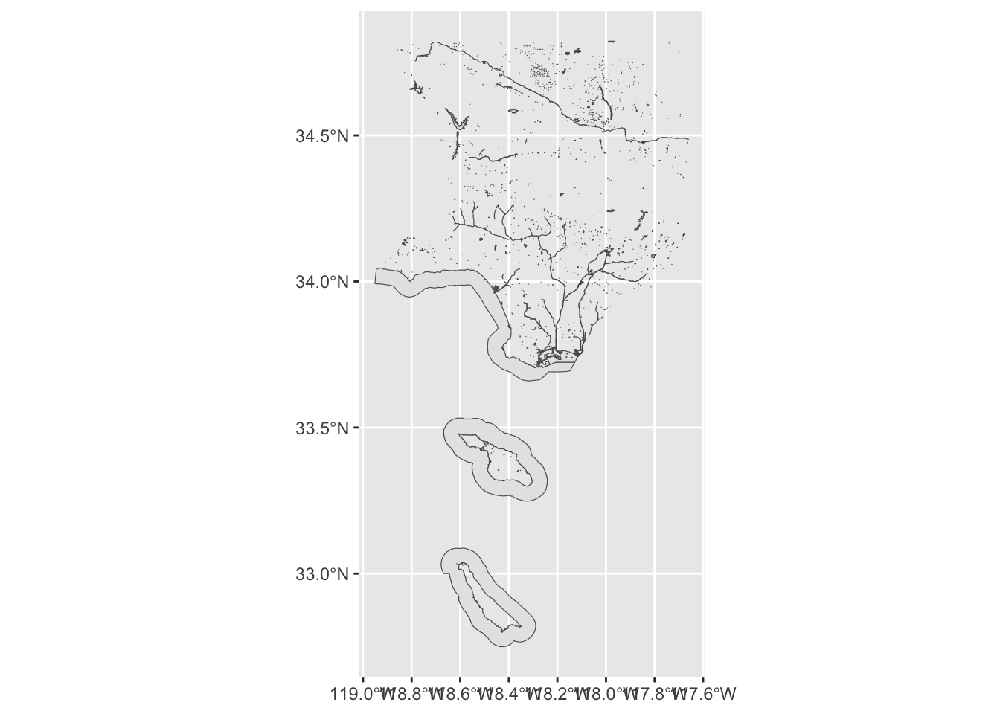
We also have a file for the LA River.
la_river <- read_sf(here('data/cleaned/los_angeles_river.geojson'))ggplot() +
geom_sf(data=la_river)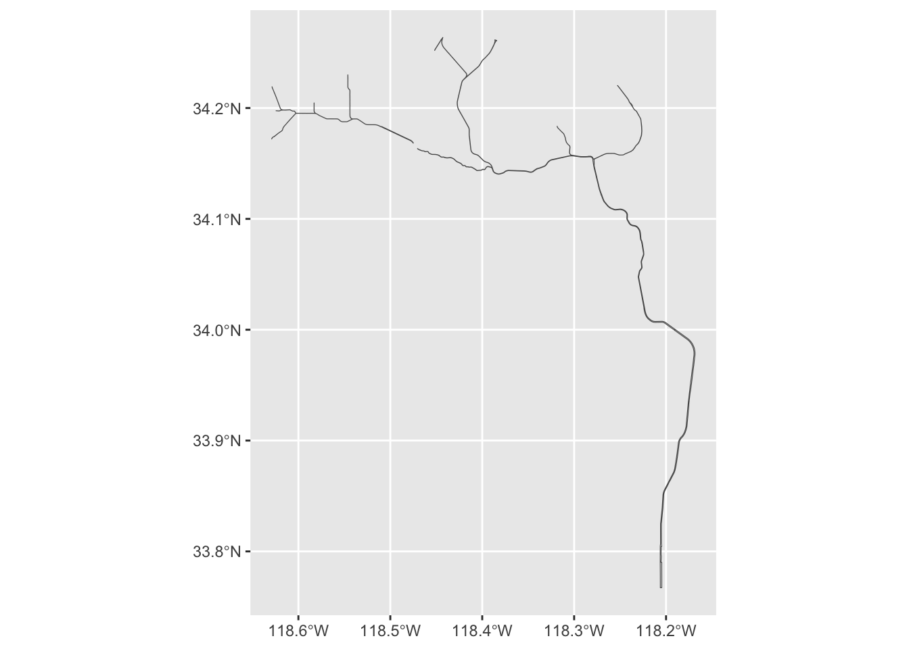
Wildfires in LA County
Some people might be interested in comparing iNaturalist data with wildfires.
California Department of Forestry and Fire Protection’s Fire and Resource Assessment Program (FRAP) keeps track wildfires in California. CAL FIRE website, CAL FIRE datasets.
California Fire Perimeters (all): This dataset covers California wildfires from 1878 to 2023. “Although the dataset represents the most complete digital record of fire perimeters in California, it is still incomplete, and users should be cautious when drawing conclusions based on the data.”
CAL FIRE Damage Inspection (DINS) Data: “This database represents structures impacted by wildland fire that are inside or within 100 meters of the fire perimeter.” This dataset covers 2013 to 2025.
CA Perimeters NIFC FIRIS public view: “This public layer was created to be used by the CAL FIRE Communications Program for the CAL FIRE incident map.” This dataset covers 2024 to 2025.
The Wildland Fire Interagency Geospatial Services (WFIGS) Group keeps track of wildfires in the United States.
WFIGS 2025 Interagency Fire Perimeters to Date: “Best available perimeters for all reported wildland fires in the United States in the current year to date”. This dataset covers 2025.
We downloaded the datasets and extracted data for the wildfires in Los Angeles County.
la_county <- read_sf(here('data/cleaned/los_angeles_county/los_angeles_county.shp'))California Fire Perimeters (all) for LA county
Wildfires in LA County from 1878 to 2023.
fires_all_la <- read_sf(here('data/cleaned/cal_fire_los_angeles_county.geojson'))
dim(fires_all_la)[1] 2619 222619 wildfires
Let’s get wildfires in the last ten years.
This dataset has a YEAR column. We can filter() by YEAR
decade_fires <- fires_all_la |>
filter(YEAR_ >= 2015)
dim(decade_fires)[1] 264 22264 wildfires
ggplot() +
geom_sf(data=la_county) +
geom_sf(data=decade_fires, fill='yellow')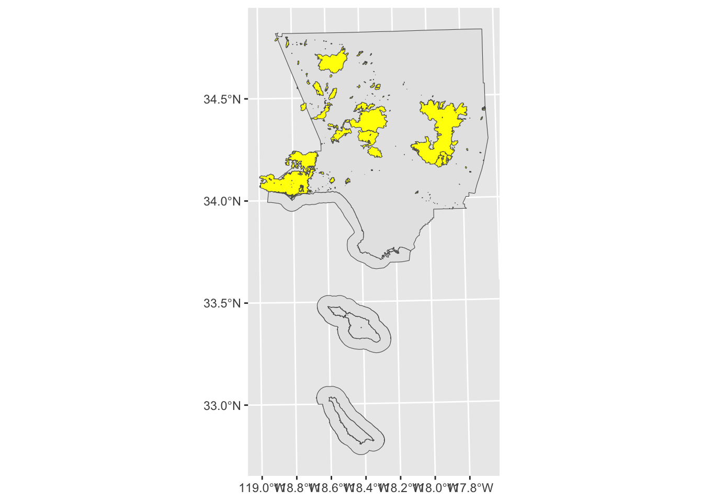
Let’s get all wildfires for a particular location.
We can use st_point() to create a point using longitude and latitude. Then use st_sfc() to add geometry and CRS.
point <- st_point(c(-118.809407, 34.089205))
location <- st_sfc(point, crs=st_crs(4326))
locationGeometry set for 1 feature
Geometry type: POINT
Dimension: XY
Bounding box: xmin: -118.8094 ymin: 34.0892 xmax: -118.8094 ymax: 34.0892
Geodetic CRS: WGS 84POINT (-118.8094 34.0892)mapview(location) 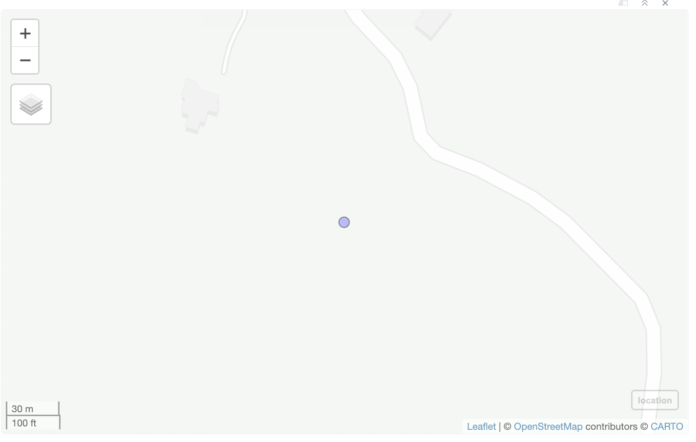
check if CRS are the same
st_crs(location) == st_crs(fires_all_la)[1] FALSESet CRS of the fires_all_la to match the location.
fires_all_la <- st_transform(fires_all_la, crs=4326)
st_crs(location) == st_crs(fires_all_la)[1] TRUEFind the fires that intersect with the location.
fires_for_location <- st_filter(fires_all_la, location)although coordinates are longitude/latitude, st_intersects assumes that they
are planarfires_for_locationSimple feature collection with 2 features and 21 fields
Geometry type: MULTIPOLYGON
Dimension: XY
Bounding box: xmin: -118.9975 ymin: 34.00705 xmax: -118.6479 ymax: 34.24306
Geodetic CRS: WGS 84
# A tibble: 2 × 22
OBJECTID YEAR_ STATE AGENCY UNIT_ID FIRE_NAME INC_NUM ALARM_DATE CONT_DATE
* <int> <int> <chr> <chr> <chr> <chr> <chr> <date> <date>
1 2214 2018 CA CCO LAC WOOLSEY 00338981 2018-11-08 2018-11-20
2 12425 1978 CA CCO LAC KANAN FIRE 00312036 1978-10-23 NA
# ℹ 13 more variables: CAUSE <int>, C_METHOD <int>, OBJECTIVE <int>,
# GIS_ACRES <dbl>, COMMENTS <chr>, COMPLEX_NA <chr>, IRWINID <chr>,
# FIRE_NUM <chr>, COMPLEX_ID <chr>, DECADES <int>, Shape__Are <dbl>,
# Shape__Len <dbl>, geometry <MULTIPOLYGON [°]>mapview(fires_for_location, zcol="FIRE_NAME") +
mapview(location) 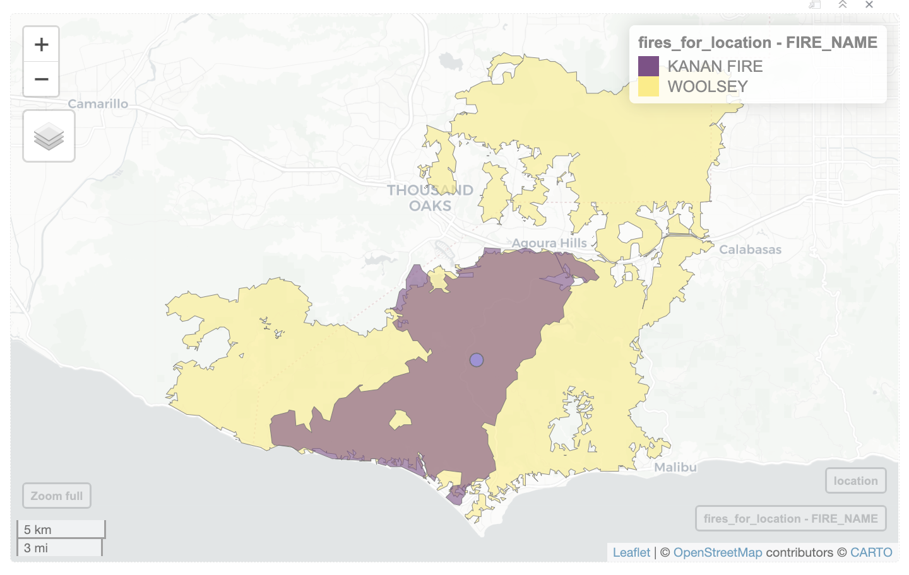
CAL FIRE Damage Inspection (DINS) for LA county
Structures in LA County impacted by wildfires from 2013 to 2025.
DINS_la <-read_sf(here('data/cleaned/DINS_los_angeles_county.geojson'))
dim(DINS_la)[1] 34266 4434, 266 structures were damaged in wildfire.
Let’s get the damaged structures for 2025.
recent_DINS <- DINS_la |>
mutate(year = year(INCIDENTST)) |>
filter(year == 2025)
dim(recent_DINS)[1] 30493 4530,493 structures were damaged in 2025.
ggplot() +
geom_sf(data=la_county) +
geom_sf(data=recent_DINS)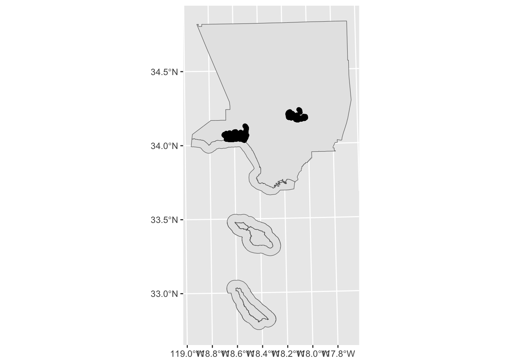
CA Perimeters NIFC FIRIS for LA county
Wildfires in LA County from 2024 to 2025.
NIFC_FIRIS_la <- read_sf(here('data/cleaned/NIFC_FIRIS_los_angeles_county.geojson'))
ggplot() +
geom_sf(data=la_county) +
geom_sf(data=NIFC_FIRIS_la, fill='yellow')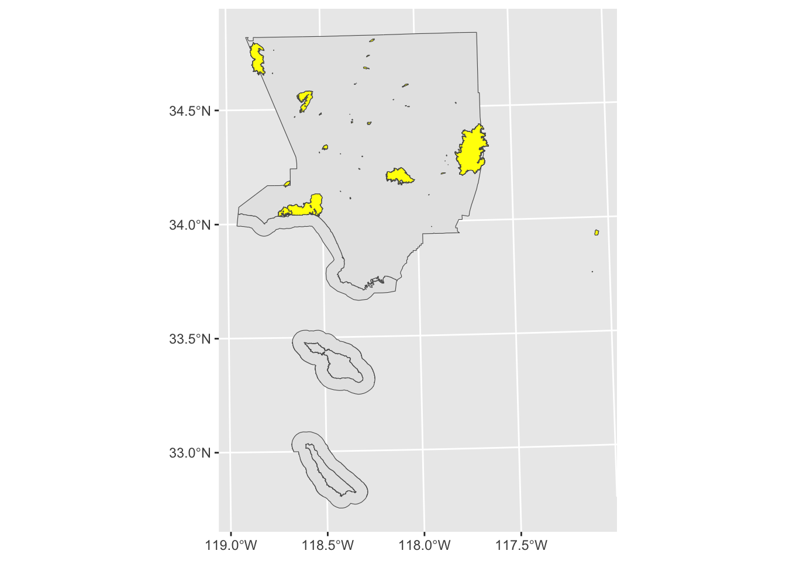
WFIGS 2025 Interagency Fire Perimeters to Date for LA county
Wildfires in LA County in 2025.
WFIGS_2025_la <- read_sf(here('data/cleaned/wfigs_2025_los_angeles_county.geojson'))
ggplot() +
geom_sf(data=la_county) +
geom_sf(data=WFIGS_2025_la, fill='yellow')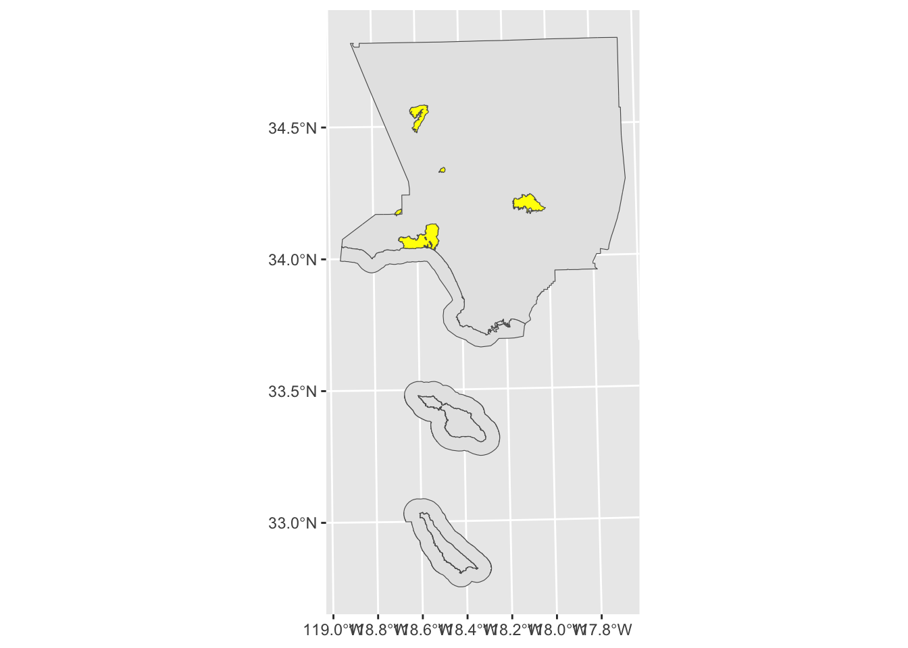
Demographics data
Some people might be interested in comparing iNaturalist data with demographics data about people in LA County.
L.A. County completed Comprehensive Countywide Park Needs Assessment in 2016. As part of that study, they looked at demographics data throughout the county. For more information: https://geohub.lacity.org/datasets/lacounty::l-a-county-park-needs-assessment-demographics/about
Note
A lot of demographics data from the Park Needs Assessment comes from the U.S. Census. The reason we’re using the parks data instead directly using Census data is because the Census data is more difficult to use. If you want to learn how to use U.S. Census data in R, check out the book Analyzing US Census Data: Methods, Maps, and Models in R
We load Park Needs Assessment data using read_sf() to read GeoJSON file. Click la_county_pna in the Environment pane to browse the data frame.
la_county_pna <- read_sf(here('data/cleaned/LA_County_PNA_Demographics.geojson'))There are 96 fields in the data set. Here’s a short description of the fields.
| field | description |
|---|---|
| STUD_AR_ID | Study Area ID |
| STUD_AR_NM | Study Area Name |
| STUD_AR_LBL | Label |
| TOOLKIT_ID | Toolkit ID |
| Acres | Park Acres |
| AC_PER_1K | Acres/1000 |
| RepPrkAc | Accessible Park Acres |
| NEED_DESCP | Need Description |
| PCT_Walk | Walkable Percentage |
| populationtotals_totpop_cy | Total Population |
| householdtotals_avghhsz_cy | Average Household Size |
| householdincome_medhinc_cy | Median Household Income |
| educationalattainment_nohs_cy | Pop Age 25+: < 9th Grade |
| educationalattainment_somehs_cy | Pop Age 25+: High School/No Diploma |
| educationalattainment_hsgrad_cy | Pop Age 25+: High School Diploma |
| educationalattainment_ged_cy | Pop Age 25+: GED |
| educationalattainment_smcoll_cy | Pop Age 25+: Some College/No Degree |
| educationalattainment_asscdeg_c | Pop Age 25+: Associate’s Degree |
| educationalattainment_bachdeg_c | Pop Age 25+: Bachelor’s Degree |
| educationalattainment_graddeg_c | Pop Age 25+: Grad/Professional Degree |
| educationalattainment_educbasec | Educational Attainment Base |
| sports_mp33003a_b_i | Participated in baseball in last 12 months: Index |
| sports_mp33004a_b_i | Participated in basketball in last 12 months: Index |
| sports_mp33005a_b_i | Participated in bicycling (mountain) in last 12 mo: Index |
| sports_mp33012a_b_i | Participated in football in last 12 months: Index |
| sports_mp33014a_b_i | Participated in golf in last 12 months: Index |
| sports_mp33015a_b_i | Participated in hiking in last 12 months: Index |
| sports_mp33016a_b_i | Participated in horseback riding in last 12 months: Index |
| sports_mp33020a_b_i | Participated in jogging/running in last 12 months: Index |
| sports_mp33024a_b_i | Participated in soccer in last 12 months: Index |
| sports_mp33025a_b_i | Participated in softball in last 12 months: Index |
| sports_mp33026a_b_i | Participated in swimming in last 12 months: Index |
| sports_mp33028a_b_i | Participated in tennis in last 12 months: Index |
| sports_mp33029a_b_i | Participated in volleyball in last 12 months: Index |
| sports_mp33030a_b_i | Participated in walking for exercise in last 12 mo: Index |
| F5yearincrements_pop0_cy | Population Age 0-4 |
| F5yearincrements_pop5_cy | Population Age 5-9 |
| F5yearincrements_pop10_cy | Population Age 10-14 |
| F5yearincrements_pop15_cy | Population Age 15-19 |
| F5yearincrements_pop20_cy | Population Age 20-24 |
| F5yearincrements_pop25_cy | Population Age 25-29 |
| F5yearincrements_pop30_cy | Population Age 30-34 |
| F5yearincrements_pop35_cy | Population Age 35-39 |
| F5yearincrements_pop40_cy | Population Age 40-44 |
| F5yearincrements_pop45_cy | Population Age 45-49 |
| F5yearincrements_pop50_cy | Population Age 50-54 |
| F5yearincrements_pop55_cy | Population Age 55-59 |
| F5yearincrements_pop60_cy | Population Age 60-64 |
| F5yearincrements_pop65_cy | Population Age 65-69 |
| F5yearincrements_pop70_cy | Population Age 70-74 |
| F5yearincrements_pop75_cy | Population Age 75-79 |
| F5yearincrements_pop80_cy | Population Age 80-84 |
| F5yearincrements_pop85_cy | Population Age 85+ |
| F5yearincrements_pop18up_cy | Population Age 18+ |
| F1yearincrements_age18_cy | Population Age 18 |
| F1yearincrements_age19_cy | Population Age 19 |
| MEAN_Asthma | MEAN Asthma |
| MEAN_Low_Birth_Weight | MEAN Low_Birth_Weight |
| MEAN_Cardiovascular | MEAN Cardiovascular |
| raceandhispanicorigin_hisppop_c | Hispanic Population |
| raceandhispanicorigin_nonhisp_c | Non-Hispanic Population |
| raceandhispanicorigin_nhspwht_c | Non-Hispanic White Pop |
| raceandhispanicorigin_nhspblk_c | Non-Hispanic Black Pop |
| raceandhispanicorigin_nhspai_cy | Non-Hispanic American Indian Pop |
| raceandhispanicorigin_nhspasn_c | Non-Hispanic Asian Pop |
| raceandhispanicorigin_nhsppi_cy | Non-Hispanic Pacific Islander Pop |
| raceandhispanicorigin_nhspoth_c | Non-Hispanic Other Race Pop |
| raceandhispanicorigin_nhspmlt_c | Non-Hispanic Multiple Race Pop |
| Age0_17Pct | Age 0-17 Pct |
| Age18_34Pct | Age 18-34 Pct |
| Age35_54Pct | Age 35-54 Pct |
| Age55_69Pct | Age 55-69 Pct |
| Age70upPct | Age 70+ Pct |
| HispanicPct | Hispanic Pct |
| WhitePct | White Pct |
| Black_Pct | Black Pct |
| Asian_Pct | Asian Pct |
| Am_Indian | American Indian Pct |
| Pac_Island | Pacific Islander Pct |
| Other_Race | Other Race Pct |
| Multi_Race | Multiple Race Pct |
| No_HS | No High School Diploma Pct |
| HS_Grad | High School Graduate Pct |
| Some_College | Some College Pct |
| College | College Degree Pct |
| unemprt_cy | Unemployment Rate |
Household Median Income
Let’s look at the Household Median Income. We can use zcol to choose which column view to in the map. The field ‘householdincome_medhinc_cy’ refers to Household Median Income.
mapview(la_county_pna,
zcol='householdincome_medhinc_cy')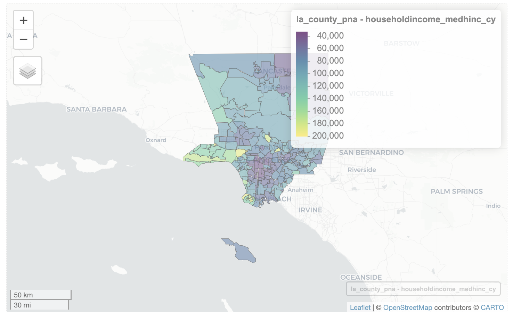
There are two issues with the previous map.
The name of the layer is too long. We can rename the layer using
layer.name ='New Name'.layer.name ='Avg income'sets the layer name to ‘Avg income’.When you click on region, the popup shows too many fields. Use
select()to pick the columns you need, and assign the results to a new object.
la_county_pna_map <- la_county_pna |>
select(STUD_AR_NM, householdincome_medhinc_cy)
mapview(la_county_pna_map,
zcol='householdincome_medhinc_cy',
layer.name ='Avg income') 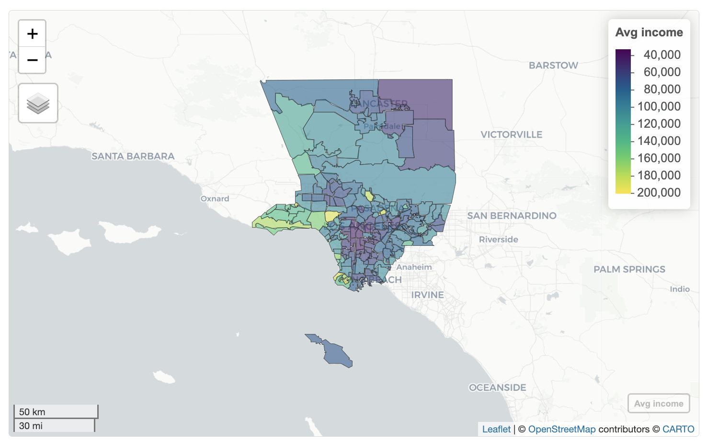
LA County Environmental Justice Screening Method
Some people might be interested in comparing iNaturalist data with environmental factors.
The Environmental Justice Screening Method (EJSM) was developed for Los Angeles County by USC PERE / Occidental College for LA County’s Green Zones Program. This tool can be used to identify stationary sources of pollution and analyze cumulative environmental impacts. The overall score show the pollution impacts for each census tract. https://egis-lacounty.hub.arcgis.com/datasets/lacounty::ejsm-scores/about
ejsm <- read_sf(here('data/raw/EJSM_Scores-shp/6cbc6914-690f-48ec-a54f-2649a8ddb321202041-1-139ir98.m1ys.shp'))ejsm_edit <- ejsm |>
select(CIscore, HazScore, HealthScor, SVscore, CCVscore)There are 5 fields in the data set.
| CIscore | Cumulative Impact Score |
| HazScore | Hazard Proximity Score |
| HealthScor | Health Score |
| SVscore | Social Vulnerability Score |
| CCVscore | Climate Change Vulnerability Score |
mapview(ejsm_edit, zcol='CIscore',
layer.name='Cumulative Impact') 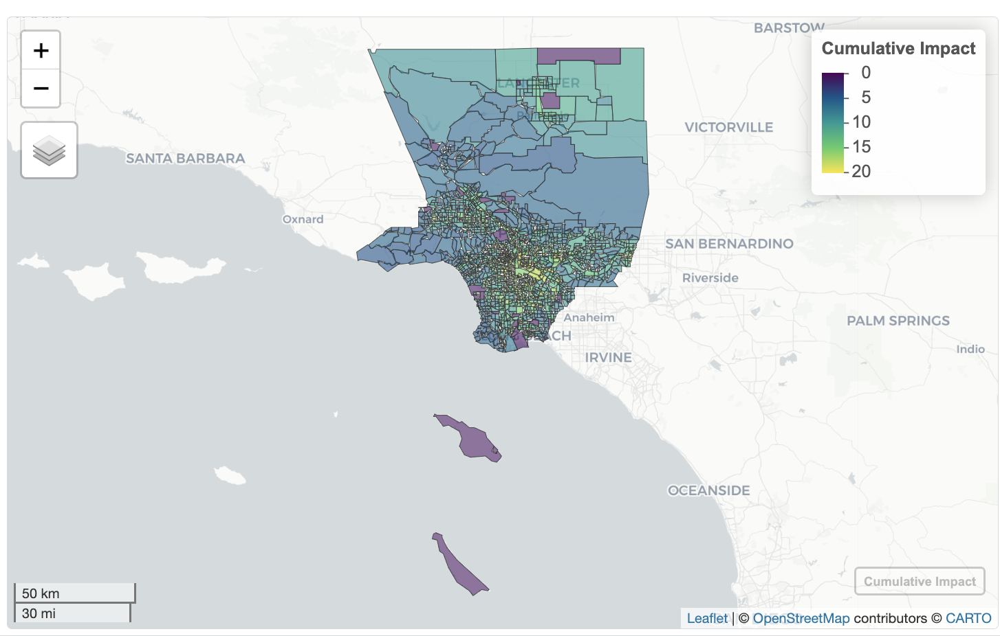
Los Angeles Ecotopes
LA Sanitation and Environment (LASAN) oversees the City of Los Angeles biodiversity initiative. LASAN published 2020 Biodiversity Report that outlines how to measure the health of the urban ecosystem in Los Angeles. As part of that report, they identified 17 ecological regions in LA called ecotopes. “Ecotopes are also envisioned as future management units to address biodiversity and related urban ecosystem stewardship topics of ecosystem services, pollution, and ecological hazards.”
ecotopes <- read_sf(here('data/raw/LA_Area_Ecotopes/FINAL Ecotope_Boundaries.shp'))
names(ecotopes)[1] "ET_LndsZon" "ET_Type" "ET_Number" "geometry" mapview(ecotopes, zcol='ET_LndsZon')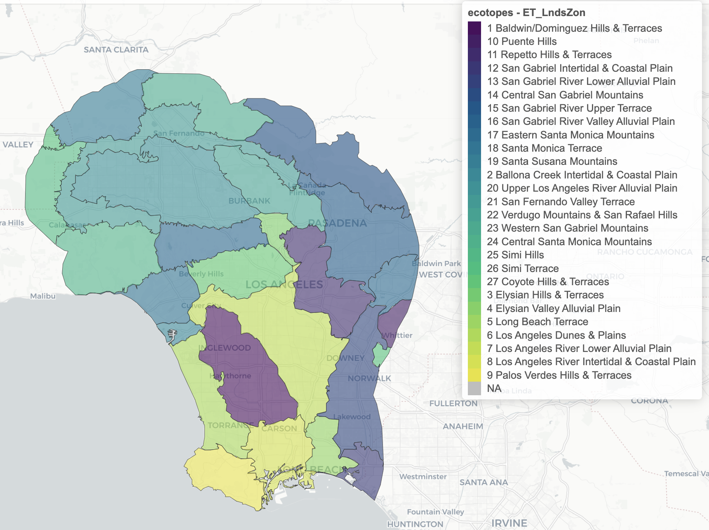
LA city Indicator Species
LASAN worked with the Biodiversity Expert Council to create a list of 37 biodiversity indicator species. When the species are present, it means the area has high quality habitat that can support biodiversity
Let’s create a map of showing the observations of indicator species.
Get all iNaturalist observations
inat_data <- read_csv(here('data/cleaned/cnc-los-angeles-observations.csv.zip'))Use st_as_sf() to add a geometry column so we can map the observations.
inat_sf <- st_as_sf(inat_data,
coords = c("longitude", "latitude"), crs = 4326)Get list of indicator species.
indicator_species <- read_csv(here('data/cleaned/LA_city_indicator_species.csv'))Get the column names for indicator_species.
names(indicator_species)[1] "group" "scientific name" "common name" "taxon rank" Get the scientific names for all the indicator species.
indicator_scientific_names <- indicator_species$'scientific name'
indicator_scientific_names [1] "Anaxyrus boreas" "Batrachoseps nigriventris"
[3] "Pseudacris hypochondriaca" "Agelaius phoeniceus"
[5] "Ardea herodias" "Bubo virginianus"
[7] "Buteo jamaicensis" "Callipepla californica"
[9] "Catherpes mexicanus" "Circus hudsonius"
[11] "Geococcyx californianus" "Lophodytes cucullatus"
[13] "Melanerpes formicivorus" "Pipilo maculatus"
[15] "Sialia mexicana" "Spatula cyanoptera"
[17] "Sturnella neglecta" "Ammopelmatus sp."
[19] "Anthocharis sara" "Apodemia virgulti"
[21] "Bombus sp." "Callophrys dumetorum"
[23] "Euphilotes battoides ssp. allyni" "Limenitis lorquini"
[25] "Mutillidae" "Pogonomyrmex"
[27] "Lynx rufus" "Neotoma macrotis"
[29] "Odocoileus hemionus" "Puma concolor"
[31] "Urocyon cinereoargenteus" "Actinemys marmorata"
[33] "Masticophis flagellum" "Crotalus oreganus"
[35] "Lampropeltis californiae" "Pituophis catenifer"
[37] "Uta stansburiana" Find observations for indicator species by looking for scientific_name that are in the indicator_scientific_names.
indicator_sf <- inat_sf |>
filter(scientific_name %in% indicator_scientific_names) |>
select(scientific_name, common_name)
dim(indicator_sf)[1] 3374 3mapview(indicator_sf)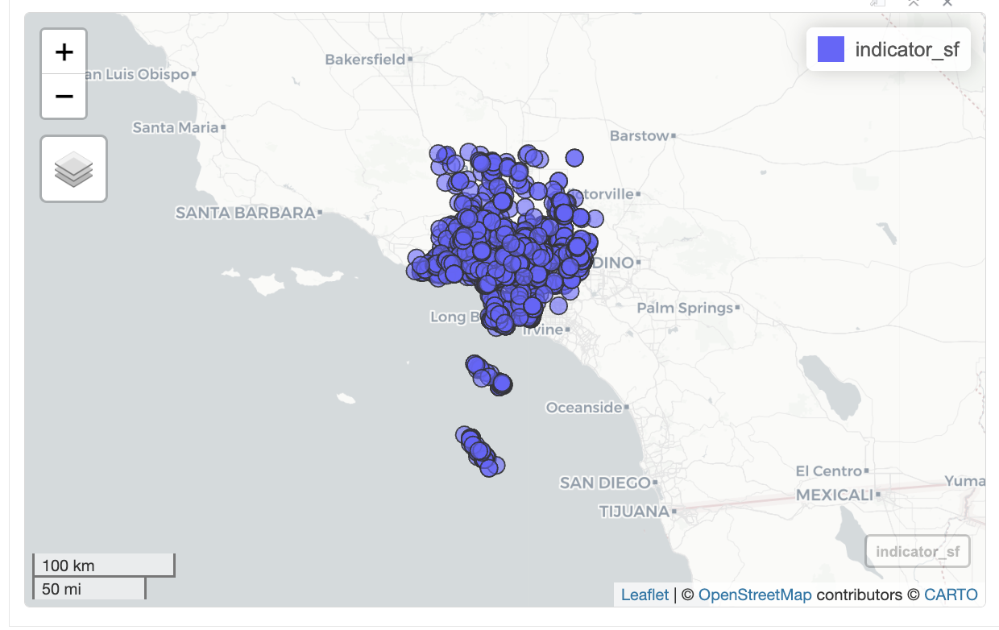
Calscape
Some people might be interested in observations for native plants.
Calscape is project by the California Native Plant Society that helps people find native plants in their area. We downloaded a list of native plants for Los Angeles County.
Get all iNaturalist observations
inat_data <- read_csv(here('data/cleaned/cnc-los-angeles-observations.csv.zip'))Use st_as_sf() to add a geometry column so we can map the observations.
inat_sf <- st_as_sf(inat_data,
coords = c("longitude", "latitude"), crs = 4326)Get list of native plants.
calscape_la_county <- read_csv(here("data/raw/calscape - Los Angeles County, CA.csv"))Rows: 1027 Columns: 50
── Column specification ────────────────────────────────────────────────────────
Delimiter: ","
chr (41): Botanical Name, Common Name, Attracts Wildlife, Plant Type, Form, ...
dbl (9): Butterflies and Moths Supported, Elevation (min), Elevation (max),...
ℹ Use `spec()` to retrieve the full column specification for this data.
ℹ Specify the column types or set `show_col_types = FALSE` to quiet this message.names(calscape_la_county) [1] "Botanical Name"
[2] "Common Name"
[3] "Butterflies and Moths Supported"
[4] "Attracts Wildlife"
[5] "Plant Type"
[6] "Form"
[7] "Height"
[8] "Width"
[9] "Growth Rate"
[10] "Seasonality"
[11] "Flower Color"
[12] "Flowering Season"
[13] "Fragrance"
[14] "Sun"
[15] "Soil Drainage"
[16] "Water Requirement"
[17] "Summer Irrigation"
[18] "Ease of Care"
[19] "Nursery Availability"
[20] "Companions"
[21] "Special Uses"
[22] "Communities (simplified)"
[23] "Communities"
[24] "Hardiness"
[25] "Sunset Zones"
[26] "Soil"
[27] "Soil Texture"
[28] "Soil pH"
[29] "Soil Toxicity"
[30] "Mulch"
[31] "Site Type"
[32] "Elevation (min)"
[33] "Elevation (max)"
[34] "Rainfall (min)"
[35] "Rainfall (max)"
[36] "Tips"
[37] "Pests"
[38] "Propagation"
[39] "Height (min)"
[40] "Height (max)"
[41] "Width (min)"
[42] "Width (max)"
[43] "Other Names"
[44] "Alternative Common Names"
[45] "Obsolete Names"
[46] "Rarity"
[47] "Is Cultivar"
[48] "Jepson Link"
[49] "Plant Url"
[50] "QR Codes (change number to change image size in pixels)"Get columns.
names(calscape_la_county) [1] "Botanical Name"
[2] "Common Name"
[3] "Butterflies and Moths Supported"
[4] "Attracts Wildlife"
[5] "Plant Type"
[6] "Form"
[7] "Height"
[8] "Width"
[9] "Growth Rate"
[10] "Seasonality"
[11] "Flower Color"
[12] "Flowering Season"
[13] "Fragrance"
[14] "Sun"
[15] "Soil Drainage"
[16] "Water Requirement"
[17] "Summer Irrigation"
[18] "Ease of Care"
[19] "Nursery Availability"
[20] "Companions"
[21] "Special Uses"
[22] "Communities (simplified)"
[23] "Communities"
[24] "Hardiness"
[25] "Sunset Zones"
[26] "Soil"
[27] "Soil Texture"
[28] "Soil pH"
[29] "Soil Toxicity"
[30] "Mulch"
[31] "Site Type"
[32] "Elevation (min)"
[33] "Elevation (max)"
[34] "Rainfall (min)"
[35] "Rainfall (max)"
[36] "Tips"
[37] "Pests"
[38] "Propagation"
[39] "Height (min)"
[40] "Height (max)"
[41] "Width (min)"
[42] "Width (max)"
[43] "Other Names"
[44] "Alternative Common Names"
[45] "Obsolete Names"
[46] "Rarity"
[47] "Is Cultivar"
[48] "Jepson Link"
[49] "Plant Url"
[50] "QR Codes (change number to change image size in pixels)"Get the scientific names for all the native plants.
plants_scientific_names <- calscape_la_county$'Botanical Name'Find observations for native plants by looking for scientific_name that are in the plants_scientific_names.
native_plants_sf <- inat_sf |>
filter(scientific_name %in% plants_scientific_names) |>
select(scientific_name, common_name, establishment_means)
dim(native_plants_sf)[1] 29146 4mapview(native_plants_sf)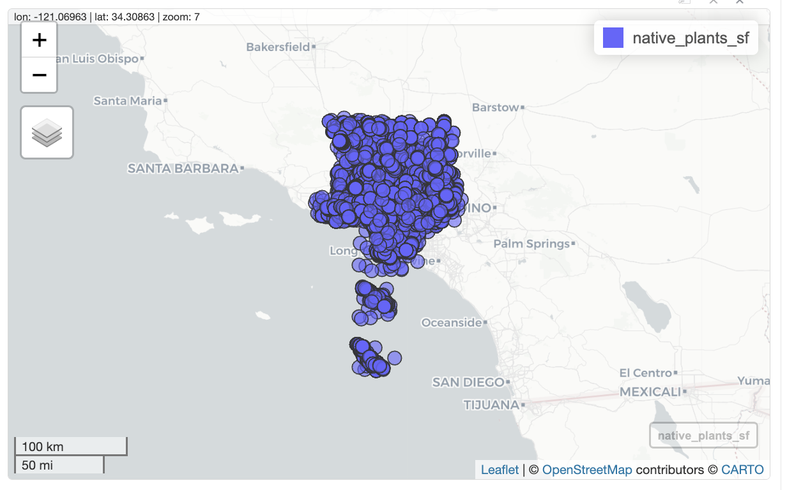